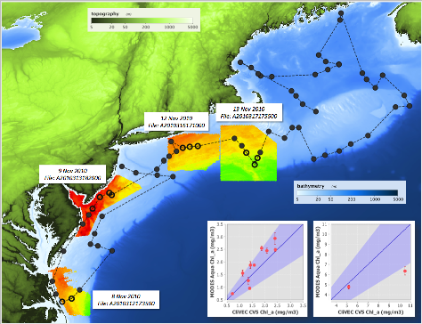

SeaDAS contains a variety of tools associated with the use of field measurement data.
Importing Field Measurement Data
Field measurement data can be loaded into SeaDAS in either the
SeaBASS or
SeaDAS6.x format.
Once loaded this data is available for comparative analysis with the satellite data and ship course tracking overlays.
The image below illustrates some of the capabilities for comparing field measurement data with satellite data.
A line (shiptrack) depicts the path of the cruise, the circles are measurement stations with the open circles
being the "validated" stations (those station which officially "matched up" with the satellite data with regards to a 3 hour time window and other
quality flag constraints). The chlorophyll imagery displayed is from the satellite. The correlation plots show the comparison
of the satellite measurement of chlorophyll to that of the field measurement value.

Level-2 File Search and Matchup Tools
The Pixel Extraction Tool can be used to effectively determine
Level-2 satellite data and field measurement matchups with user specified time window and quality flag constraints.
SeaBASS matchup tools are available, which use the standard accepted SeaBASS validation criteria.
Find Matchup is a tool which returns satellite level-2 file names and download links for a time and point or region.
Make Matchup is a tool which extracts, filters, and appends satellite match-up data to a valid SeaBASS file.